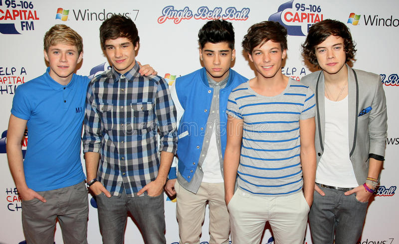

My Brain: One Direction Edition
A deep dive into what I remember 10 years later
General Source: Me & My Brain (pretty valid)
From the ripe age of ten years old I began my infatuation with the world-renowned boy band One Direction. This Web Page will be describing some of the things I still have stored in my brain about these men, whom I still support to this day. The indiscriminate hiatus that these men went on six years ago has still not put a stopper on my love, nor hindered me from continuing to obsess over them.
Here is a table that will inform you of the birth dates and star signs of the boys (How I remember this information, I have no idea) They are presented in the order of the image to the right (from left to right).

| Name | Birthday | Sign |
| Niall Horan | Sep. 13, 1993 | Virgo |
| Liam Payne | Aug. 29, 1993 | Virgo |
| Zayn Malik | Jan. 12, 1993 | Capricorn |
| Louis Tomlinson | Dec. 24, 1991 | Capricorn |
| Harry Styles | Feb. 1, 1994 | Aquarius |
And now, the final tidbits of personal information I remember about this group off of the top of my head:
Their Favorite "Things" and Fun Facts
The font color of their names are their favorite colors.
Louis Tomlinson
- Food: A bowl of cereal
- Genre of Music: Late 90s/Early 2000s Alternative
- Likes girls who eat carrots
- Bonus: Pigeons (Kevin)
Zayn Malik
- Food: Samosas
- Genre of Music: RnB
- Likes his alone time
Liam Payne
- Food: Bacon, Steak, and Veggies
- Genre of Music: Alternative/Pop
- He used to really like to wear suspenders that did not hold his pants up.
- Fun Fact:
He is my least favorite member. I'm sure he would love this information
Niall Horan
- Food: Nando's, the restaurant
- Genre of Music: Folk, Folk Pop
- Silly Fact: His favorite color is green, but he is afraid to wear it because he feels people will see him as a leprachaun. (He is Irish)
Harry Styles
- Food: Kale (smoothies)
- Genre of Music: 70s/80s Pop, Folk, and Alternative
- He really likes tattoos and expressing himself through his appearance